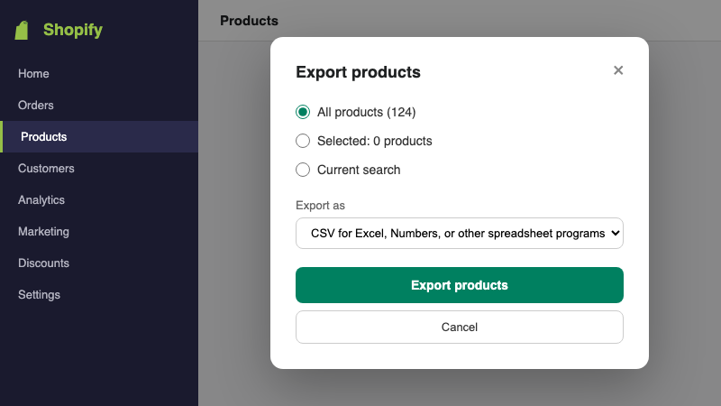
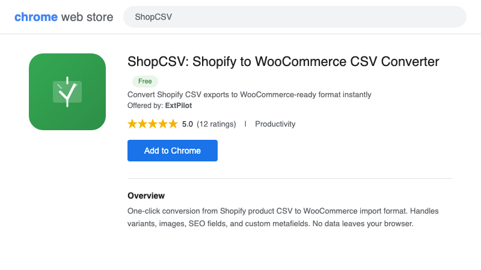
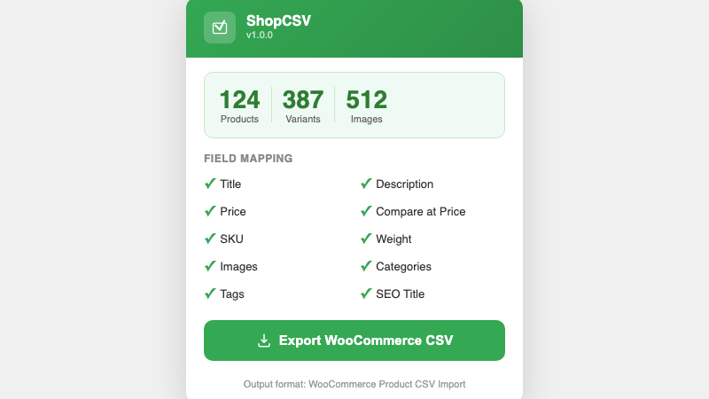
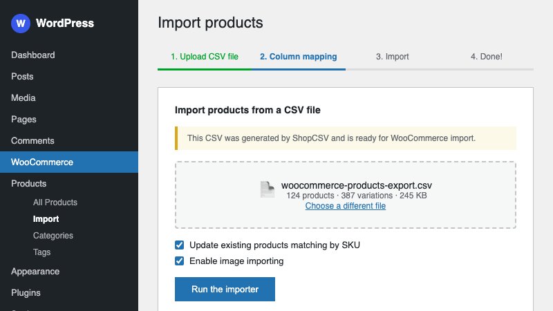

How to Convert Shopify CSV to WooCommerce Import Format (Step-by-Step)
The Problem: Shopify and WooCommerce Speak Different CSV
You have decided to move your store from Shopify to WooCommerce. You export your product catalog from Shopify, get a nice CSV file, open WooCommerce's product importer, upload the file — and nothing works.
The columns are wrong. Shopify calls it Variant Price, WooCommerce expects Regular price. Shopify uses Body (HTML), WooCommerce wants Description. Variants are structured completely differently. Image URLs are in different columns. Tags, categories, inventory — all mismatched.
You now have two options: spend hours manually reformatting the CSV in a spreadsheet, or use a tool that does the translation for you in seconds.
What You Need
- A Shopify product CSV export file — the standard CSV you download from Shopify Admin (Products > Export)
- The ShopCSV browser extension — free for Chrome and Edge, handles up to 30 products at no cost
That is it. No API keys, no Shopify app installs, no WooCommerce plugins beyond what ships with WooCommerce by default. No data uploaded to any server.
Step 1: Export Products from Shopify
Log into your Shopify Admin and navigate to Products. Click the Export button in the top-right corner.
Shopify will ask you what to export:
- Which products? — Select "All products" if you are migrating your entire catalog. You can also filter first and export only the current page or a selected set.
- Which format? — Choose "CSV for Excel, Numbers, or other spreadsheet programs". This is the standard format that ShopCSV expects. Do not choose the "Plain CSV" option — it uses a different encoding that can cause issues with special characters.
Click Export products. Shopify will email you a download link if your catalog is large, or provide an instant download for smaller stores. Save the file somewhere you can find it.

Step 2: Install ShopCSV
Add the ShopCSV extension to your browser:
- Chrome: ShopCSV on Chrome Web Store
- Edge: ShopCSV on Edge Add-ons
Click "Add to Chrome" (or "Get" on Edge) and confirm the installation. ShopCSV does not require any special permissions — it only needs access to files you explicitly drop into it. No sign-up, no account creation.

Step 3: Convert Your CSV with ShopCSV
Click the ShopCSV icon in your browser toolbar to open the extension popup. You will see a drop zone.
- Drag and drop your Shopify CSV file into the popup (or click to browse)
- Review the summary — ShopCSV parses the file and shows you how many products, variants, and images it found. This is your chance to verify the file looks right before converting.
- Click "Export WooCommerce CSV" — the converted file downloads to your computer instantly
The entire conversion happens in your browser. Your product data is never uploaded anywhere. ShopCSV reads the Shopify column headers, maps each field to its WooCommerce equivalent, restructures variants into the format WooCommerce expects, and writes a new CSV file.

Step 4: Import into WooCommerce
Log into your WordPress admin panel and navigate to WooCommerce > Products. Click the Import button at the top of the page.
- Upload your file — select the WooCommerce CSV that ShopCSV just generated
- Column mapping — WooCommerce will show you a mapping screen. Because ShopCSV already uses the correct WooCommerce column headers, most fields will auto-map. Review the mapping and click Run the importer.
- Done — WooCommerce processes the file and creates your products. You will see a summary showing how many products were imported, updated, or skipped.
Check a few products in your WooCommerce catalog to verify that titles, descriptions, prices, images, and variants all came through correctly.

What Fields Get Converted?
ShopCSV maps Shopify's product CSV columns to WooCommerce's expected import format. Here is the field mapping:
| Shopify Field | WooCommerce Field |
|---|---|
| Title | Name |
| Body (HTML) | Description |
| Vendor | Brands (attribute) |
| Type | Categories |
| Tags | Tags |
| Variant Price | Regular price |
| Variant Compare At Price | Sale price |
| Variant SKU | SKU |
| Variant Inventory Qty | Stock |
| Variant Weight | Weight (kg) |
| Option1 Name / Value | Attribute 1 name / value(s) |
| Option2 Name / Value | Attribute 2 name / value(s) |
| Option3 Name / Value | Attribute 3 name / value(s) |
| Image Src | Images |
| Image Alt Text | Image alt text |
| SEO Title | Meta: _yoast_wpseo_title |
| SEO Description | Meta: _yoast_wpseo_metadesc |
| Published | Published |
Variants are particularly tricky to migrate manually. Shopify represents each variant as a separate row under the parent product, while WooCommerce uses a parent row (type: variable) followed by child rows (type: variation). ShopCSV handles this restructuring automatically.
Tips for Large Stores
Stores with 100+ Products
WooCommerce's built-in importer handles large files well, but if you run into timeout issues on shared hosting, try splitting your CSV into batches of 50-100 products. You can do this by exporting filtered sets from Shopify (e.g., by product type or collection) and converting each batch separately.
Check Your Variants
After importing, spot-check a few variable products in WooCommerce. Make sure the variant options (Size, Color, etc.) are mapped as product attributes and that each variation has the correct price and SKU. ShopCSV handles the standard Shopify variant structure, but heavily customized stores may need minor manual adjustments.
Images Are URLs, Not Files
Both Shopify and WooCommerce CSV formats reference images by URL. ShopCSV preserves the original Shopify CDN image URLs in the output file. WooCommerce will download these images automatically during import — as long as your Shopify store is still active and serving those image URLs. If you have already canceled your Shopify subscription, download your images first.
Free Tier Limit
The free version of ShopCSV converts files with up to 30 products. If your store has more than 30 products, the Pro license ($14.99 one-time payment) removes the limit entirely. One payment, no subscription, no recurring charges.
Frequently Asked Questions
Does ShopCSV upload my product data to any server?
No. Everything runs locally in your browser. Your CSV file is read and processed on your computer. Nothing is sent to any external server. You can verify this yourself — the extension works even when you are offline (after installation).
How many products can I convert for free?
Up to 30 products per conversion, including all their variants. For larger catalogs, the Pro license costs $14.99 (one-time) and removes the product limit.
Does ShopCSV handle product variants and images?
Yes. Shopify variants are restructured into WooCommerce's parent-child variable/variation format. Product images and variant images are included with their original CDN URLs. WooCommerce downloads the images automatically during import.
Do I need a Shopify API key or WooCommerce REST API?
No. ShopCSV works entirely with CSV files. Export from Shopify Admin, convert with the extension, import through WooCommerce's built-in importer. No API keys, no REST endpoints, no additional plugins needed.
Start Your Migration
Moving from Shopify to WooCommerce does not have to mean hours of spreadsheet reformatting. Export your Shopify products, run them through ShopCSV, and import the result into WooCommerce. The whole process takes less time than reading this article did.